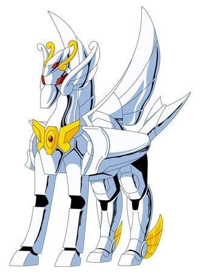

alt="">
Armadura de Pegaso
la armadura que utiliza Seiya, el protagonista de Los Caballeros del Zodiaco. Se caracteriza por su diseño elegante en color celeste claro con adornos dorados, y proporciona gran protección a su portador. Además, permite a Seiya canalizar su cosmos, potenciando sus habilidades en combate